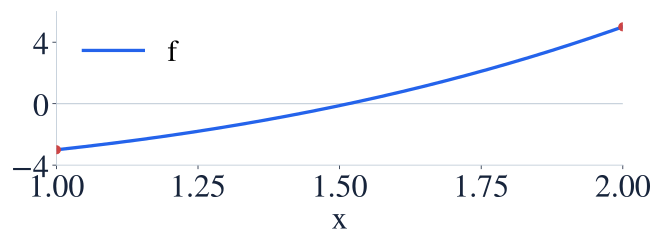

The intermediate value theorem
중간값정리
You can prove a solution exists without finding its exact location.
정확한 위치를 구하지 않고도 해의 존재를 보일 수 있습니다.
You can prove a solution exists without finding its exact location.
정확한 위치를 구하지 않고도 해의 존재를 보일 수 있습니다.
The intermediate value theorem requires continuity on the entire closed interval.
중간값정리는 닫힌 구간 전체의 연속성을 요구합니다.

A continuous graph cannot jump over a height between its endpoint values.
연속인 그래프는 양 끝값 사이의 높이를 뛰어넘지 못합니다.
Evaluate the endpoint values first.
먼저 양 끝의 함숫값을 계산합니다.
The target height zero lies strictly between those values.
목표 높이 0이 두 값 사이에 있습니다.
Continuity and the endpoint comparison justify the existence conclusion.
연속성과 끝값 비교를 근거로 해가 존재한다고 결론냅니다.
This theorem guarantees existence, not uniqueness.
이 정리는 존재를 보장합니다. 해가 하나뿐이라는 뜻은 아닙니다.
Explain why p has a zero strictly inside the interval.
구간 내부에 영점이 존재하는 이유를 설명하세요.